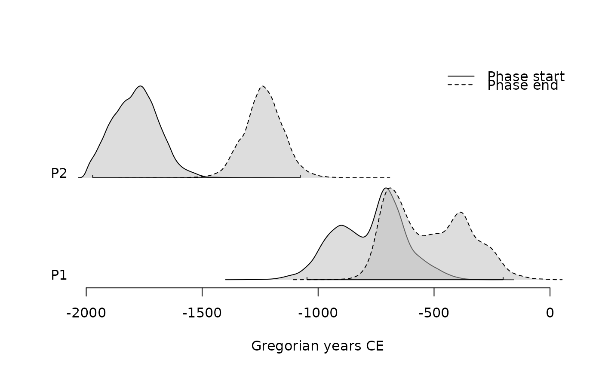
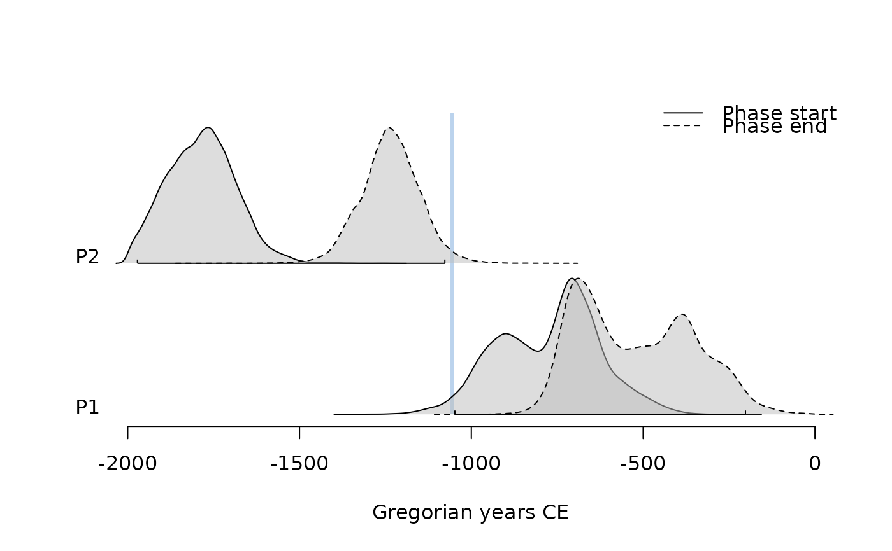
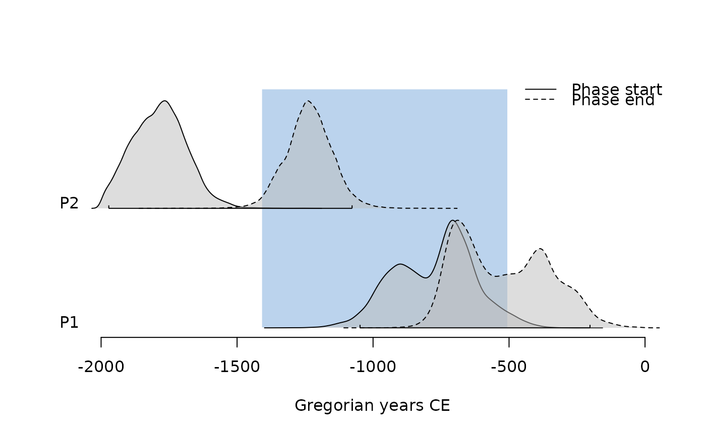

Constructs the minimum and maximum for a group of events (phase).
Usage
phases(x, groups, ...)
# S4 method for class 'EventsMCMC,missing'
phases(x)
# S4 method for class 'EventsMCMC,list'
phases(x, groups)Arguments
- x
An
EventsMCMC.- groups
A
listof (named) vector of names or indexes of columns inx(seephases()).- ...
Currently not used.
Value
A PhasesMCMC object.
Note
The default value of start or end corresponds to a CSV file exported
from ChronoModel.
See also
Other phase tools:
duration()
Examples
## Coerce to phases
(pha <- as_phases(mcmc_phases, start = c(1, 3), calendar = CE(), iteration = 1))
#> <PhasesMCMC>
#> - Number of phases: 2
#> - Number of MCMC samples: 30000
summary(pha, calendar = CE())
#> $P1
#> mad mean sd min q1 median q3 max start end
#> start -708 -773 148 -1349 -890 -749 -671 -207 -1059 -501
#> end -690 -521 169 -1050 -670 -537 -384 -5 -776 -214
#> duration 278 253 138 1 151 249 345 880 1 487
#>
#> $P2
#> mad mean sd min q1 median q3 max start end
#> start -1766 -1785 100 -2000 -1857 -1785 -1719 -1223 -1981 -1611
#> end -1240 -1235 87 -1833 -1289 -1235 -1181 -719 -1404 -1067
#> duration 561 551 132 5 464 552 639 1157 297 806
#>
## Plot phases
plot(pha)

plot(pha, succession = "hiatus")

plot(pha, succession = "transition")

## Compute phases from events
(eve <- as_events(mcmc_events, calendar = CE(), iteration = 1))
#> <EventsMCMC>
#> - Number of events: 4
#> - Number of MCMC samples: 30000
## Compute min-max range for all chains
pha1 <- phases(eve)
summary(pha1, calendar = CE())
#> $P1
#> mad mean sd min q1 median q3 max start end
#> start -1766 -1785 100 -2000 -1857 -1785 -1719 -1223 -1981 -1611
#> end -690 -521 169 -1050 -670 -537 -384 -5 -776 -214
#> duration 1167 1265 196 483 1116 1253 1411 1947 915 1637
#>
## Compute min-max range by group
pha2 <- phases(eve, groups = list(phase_1 = c(1, 3), phase_2 = c(2, 4)))
summary(pha2, calendar = CE())
#> $phase_1
#> mad mean sd min q1 median q3 max start end
#> start -708 -773 148 -1349 -890 -749 -671 -207 -1059 -501
#> end -690 -521 169 -1050 -670 -537 -384 -5 -776 -214
#> duration 278 253 138 1 151 249 345 880 1 487
#>
#> $phase_2
#> mad mean sd min q1 median q3 max start end
#> start -1766 -1785 100 -2000 -1857 -1785 -1719 -1223 -1981 -1611
#> end -1240 -1235 87 -1833 -1289 -1235 -1181 -719 -1404 -1067
#> duration 561 551 132 5 464 552 639 1157 297 806
#>
zz <- pha@.Data
head(zz)
#> , , start
#>
#> P1 P2
#> [1,] -319045.0 -625448.0
#> [2,] -273570.0 -629970.0
#> [3,] -335555.9 -604871.0
#> [4,] -319169.8 -609557.0
#> [5,] -323497.0 -706432.8
#> [6,] -355422.6 -677593.3
#>
#> , , end
#>
#> P1 P2
#> [1,] -267769.1 -399848.8
#> [2,] -270327.0 -435810.7
#> [3,] -231655.0 -431449.5
#> [4,] -255757.0 -448294.4
#> [5,] -300265.5 -478087.0
#> [6,] -263102.0 -444912.5
#>
head(zz[, 1, ])
#> start end
#> [1,] -319045.0 -267769.1
#> [2,] -273570.0 -270327.0
#> [3,] -335555.9 -231655.0
#> [4,] -319169.8 -255757.0
#> [5,] -323497.0 -300265.5
#> [6,] -355422.6 -263102.0
head(pha)
#> <PhasesMCMC>
#> - Number of phases: 2
#> - Number of MCMC samples: 6